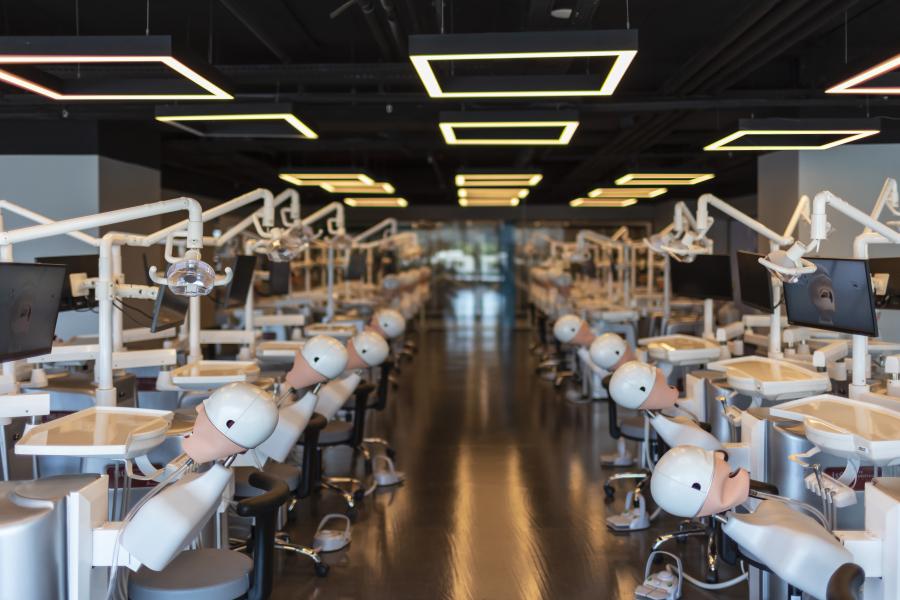

Studying in Turkey: A Distinctive Experience and a Different Future
Turkey is renowned for its rich historical and cultural heritage, and with the advancement of the Turkish educational environment, it has become attractive to international students, at levels of postgraduate studies, university studies, or even studying in primary and secondary stages, as Turkey offers many advantages that make it an ideal destination for education
Diverse Specializations
Turkish universities offer study programs in various specializations, whether you are interested in medical sciences, technological engineering fields, through economics and arts, where this allows students to find the perfect program in Turkey to gain knowledge and experience in their preferred academic fields

Low Cost of Education
Turkey is one of the few countries that offers high-quality education at reasonable prices for international students within universities that extend their recognition from regional Arab recognition to international and global recognition, compared to many other countries, where the cost of studying in Turkey is reasonable and suitable for many students looking for an opportunity to obtain high-quality education at an affordable cost
Cultural Coexistence
Thanks to the cultural inclinations of Turkey towards commitment and its geographical presence between the East and the West, this provides international students with an opportunity to coexist with different cultures in Turkey while maintaining their culture, they can integrate in Turkey with the aim of getting to know new customs and traditions and interacting with people from different backgrounds while feeling cultural and religious security, which helps in expanding the horizons of students and developing their understanding of the world.

Applied Laboratories
The applied laboratories in Turkish universities have a set of features that contribute to enhancing the process of education, research, and development in various scientific and technical disciplines, as these laboratories are considered a lively and important environment for students and researchers thanks to the Turkish universities' connection between the foundations of sciences and modern technological revolutions, where students can apply the theoretical concepts they learned in classrooms within a realistic environment, and benefit from practical experiments to deepen their understanding of scientific topics and deduce practical solutions and develop their concept of their diverse specializations
Future Career Opportunities
Turkish universities provide support for graduates from various specializations through contracts with private sector companies to secure practical training and part-time job opportunities for students, as Turkish universities support scientific research and student project development through student clubs in various fields to experience teamwork, as most Turkish universities support students through internal university employment offices
It can be said that studying in Turkey provides excellent opportunities for higher education and personal and professional development thanks to modern facilities and bright future career opportunities in addition to the emerging education sector in Turkey which aspires to dominate the scientific field in the future.